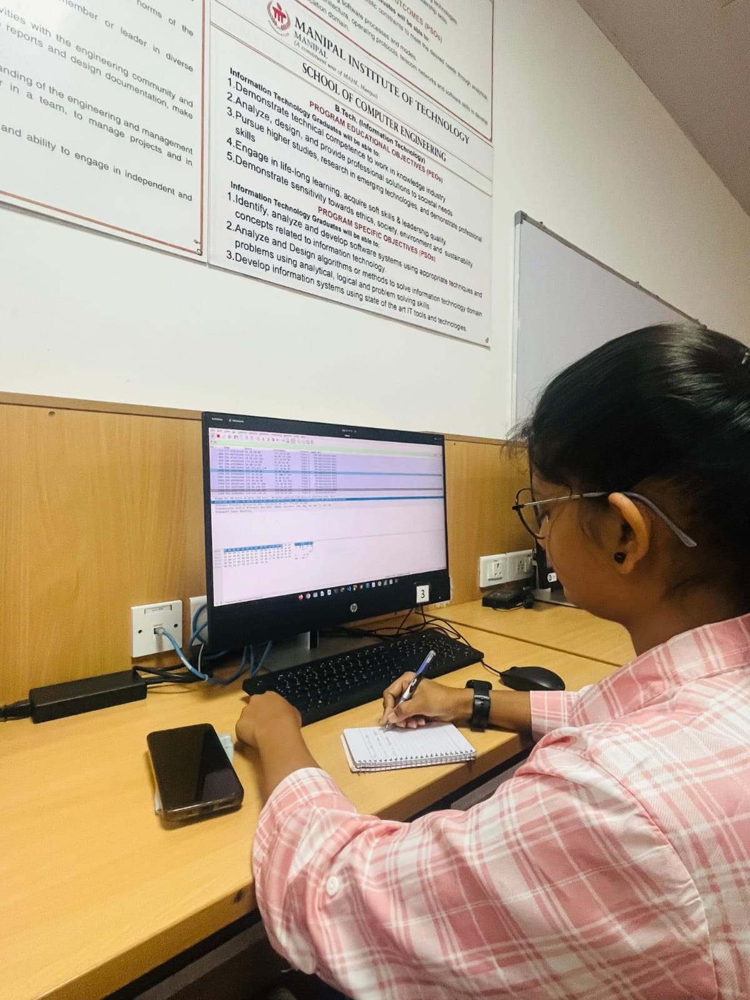
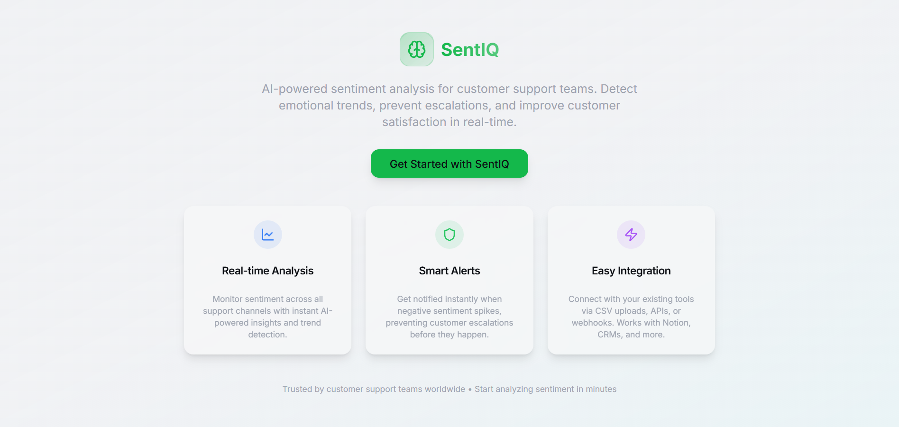
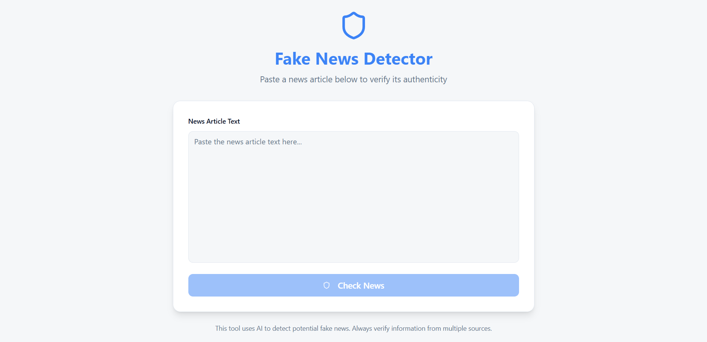
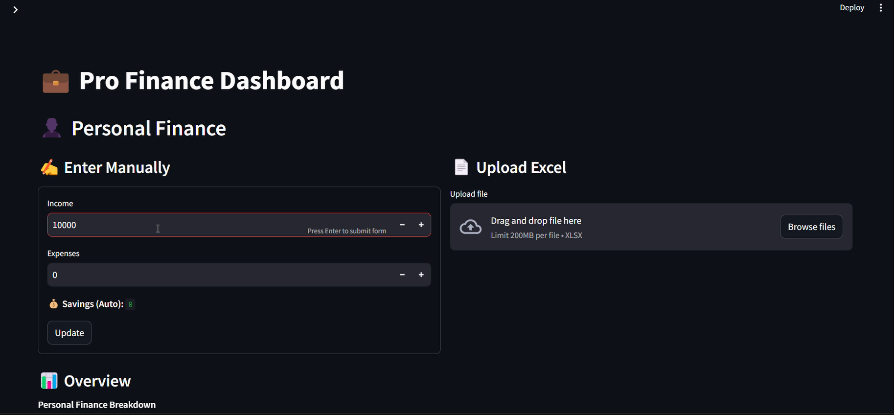
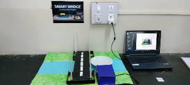

Passionate about building intelligent systems, analyzing data, and creating impactful AI-driven solutions across cybersecurity, sentiment analysis, IoT, and sustainability.
I am currently pursuing my 3rd year of Engineering in Artificial Intelligence and Machine Learning. I have worked on diverse projects spanning AI/ML, data analytics, cybersecurity, APIs, IoT-based systems, and sustainability-focused innovations. I enjoy transforming complex problems into practical, scalable solutions using modern technologies.

Real-time AI platform for sentiment analysis with emotion detection, sentiment calendar, alerts, authentication, and widgets.

AI-based system to classify news articles as real or fake with instant predictions and batch processing.

Streamlit-based dashboard to track finances with stock prediction and analytics.

IoT-based bridge model to manage traffic and river flow simultaneously.
Sustainable project converting waste heat from solar plants into electricity.
Worked on real-world data science problems.
Designed responsive user interfaces with usability focus.
Worked on databases, leads, and analytics.
Email: sanjanadhawale@ieee.org
LinkedIn: sanjana-dhawale